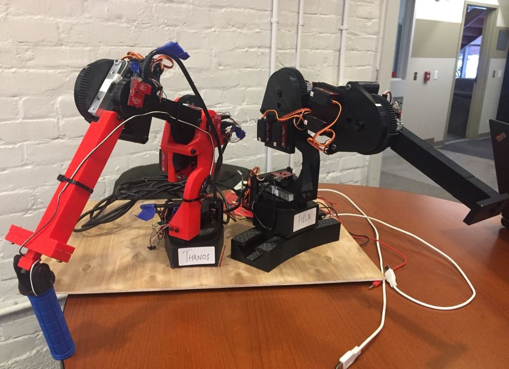
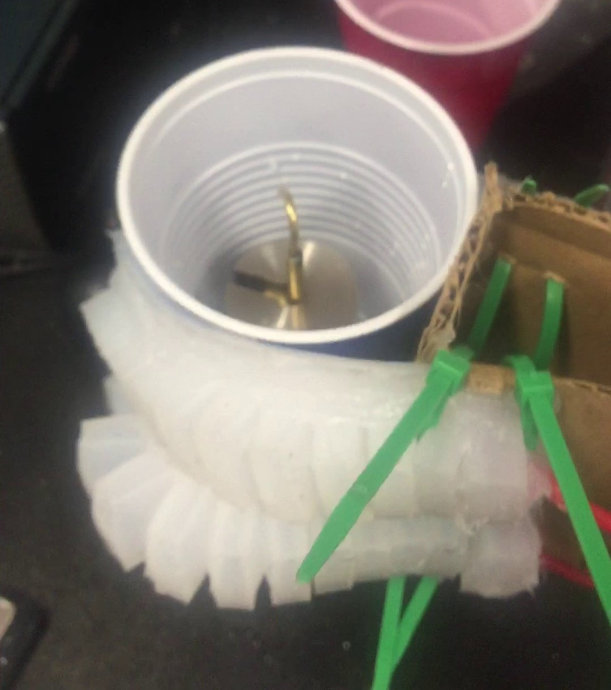
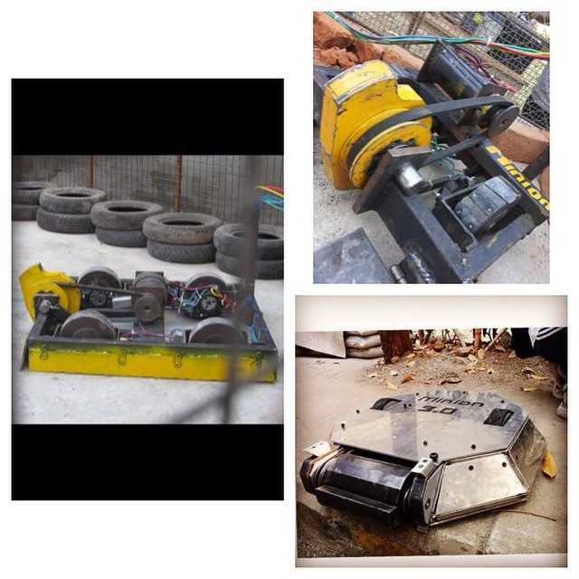
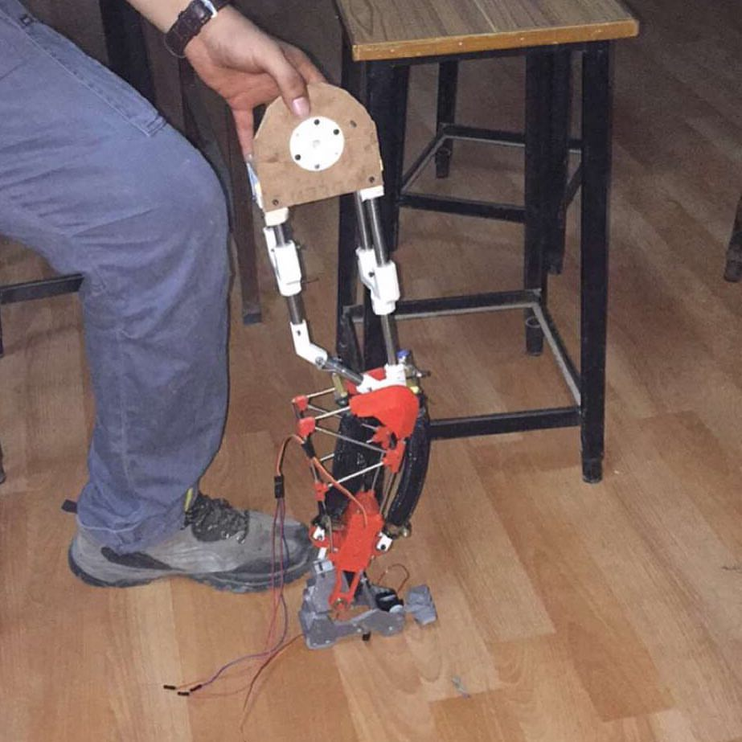
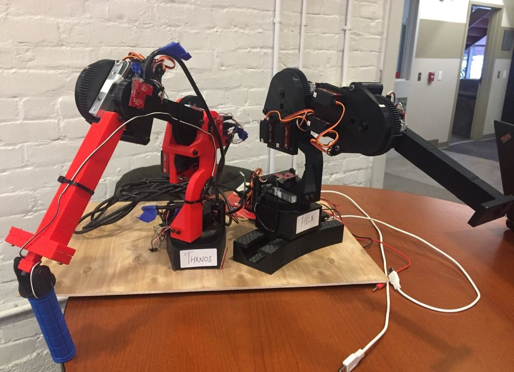
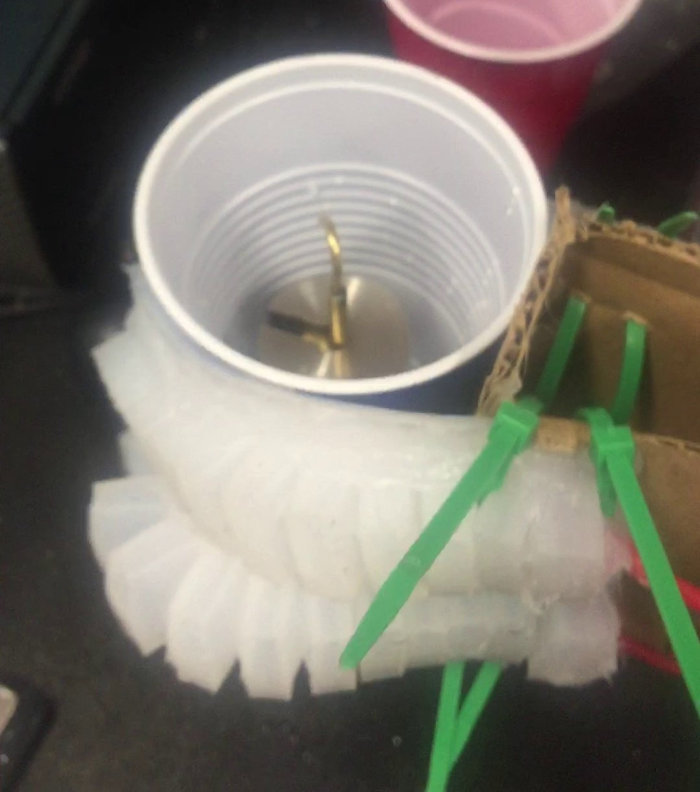
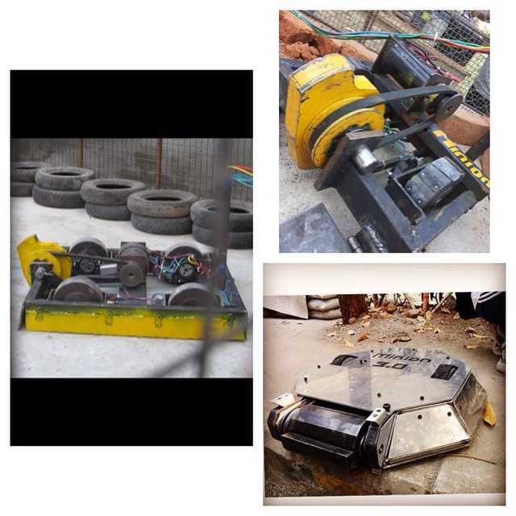
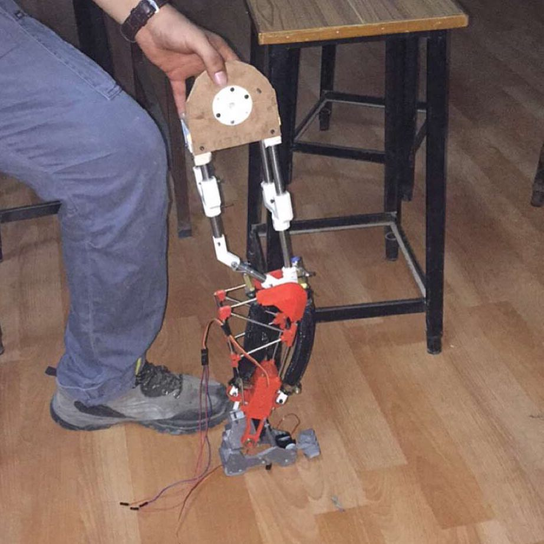

PORTFOLIO





During my academic and professional career, I have completed a range of projects that have equipped me with the ability to effectively work on a team and solve complex problems. I am comfortable taking a leadership position or not depending on the needs of the group and have proven to be able to collaborate with people of diverse backgrounds to accomplish a task.
At the technical level, I have a passion for the integration of disciplines needed in Robotics Engineering, but especially enjoy hardware and the challenge of designing and testing new prototypes. I have experience with circuits, hardware assembly, and machining. On the software side, I have direct experience with debugging robots and with programming using Python and MATLAB and how to implement kinematics, dynamics and control of the robot.
I am currently working on my Capstone project, here I am developing a bedside assistive robotic system for lower body rehabilitation. For this project, I contributed in developing the controller in MATLAB, making a Simulink Model for the KUKA LBR iiwa serial manipulator. In the past, I have taken courses on Robot Dynamics, Robot Control, soft robotics, Motion Planning, Synergy of human and Robots and Artificial Intelligence. Through my Artificial intelligence class, I have implemented Search algorithms, Supervised learning and unsupervised learning.
I completed my Co-op at Philips Analytics and Monitoring- Connected Sensing, where I was the part of the Algorithms Team. Here, I worked on a cross-collaborative team to design and develop a wearable device to monitor heart rate, respiration rate, activity type and level and ECG signals. I contributed in the development process of the signal processing algorithms in MATLAB and worked with large physiological data-sets to test the algorithms. I was given the task to design and develop experimental setups for the final verification and validation of the algorithms and successfully developed protocols for final integration of the algorithms.
G.H.Patel College of Engineering and Technology | Gujarat Technological University
4 Years Course
Chokshi Graphics, Ahmedabad, India
Electrical and Computer Engineering Department,WPI, USA
Philips- Connected Sensing Venture,Cambridge,USA
Robotics Project Club, GCET
Food Committee,Annual Function, GCET
International Conference on Innovations in Automation and Mechatronics Engineering, GCET
Robowars, GTU central Techfest
Robowars, Shashvat
Robowars, Technopolis
Robowars, IIT BOMBAY Techfest
Robowars, IIT BOMBAY Techfest
Robowars, IMAZE
Robowars Rookie, JU-Rhythm,
Robowars PRO, JU-Rhythm



